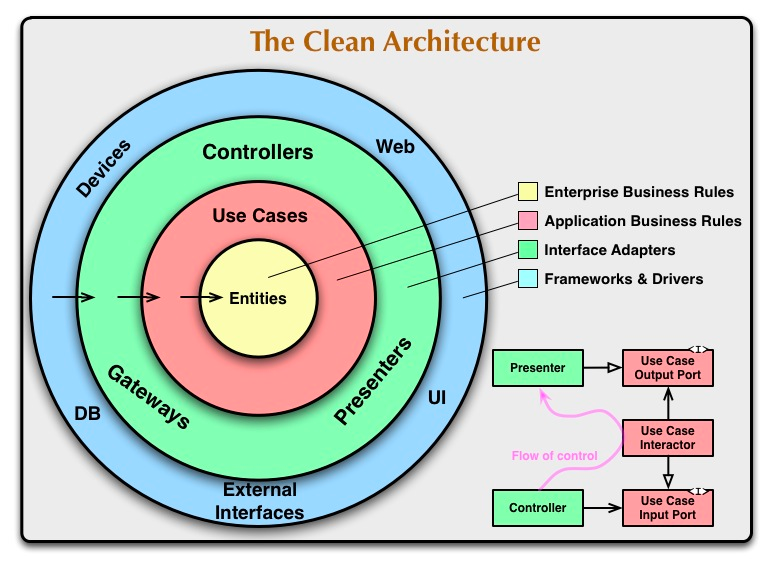

페이히어 인턴 기록.
Payhere
페이히어에서 4주 간의 인턴생활을 마무리했고 그 후기를 적어보려고 합니다. 제 개인적으로 페이히어에서 인턴쉽을 진행할 수 있게 되어서 운도 정말 좋았다고 생각하고, 페이히어에서 만난 현업에 있는 선배 개발자 분들께서 많은 걸 얻어갔으면 좋겠다고 알려주신 것과 해주신 조언들이 앞으로 주니어 개발자로 성장하는 데 큰 힘이 될 것 같습니다!
한달동안 생활은 요약하면 공식문서를 참고하면서 개별학습을 진행했고, 매주 월요일 백엔드 회의, 협업 중반부터는 데일리 미팅, 그리고 프로젝트 킥오프에 참여했었습니다. 데일리 미팅에서 jira 이용해서 매일 어떤 걸 하고 있고, 뭐뭐 할 예정이다 브리핑을 들었고, figma로 정리된 스토리나 로드맵 등 보면서 개발팀 외에도 운영팀이나 디자인팀과 소통하는 모습 함께 참여하면서 스프린트 간접 체험을 할 수 있었습니다.
처음에는 FastAPI 공식문서를 보며 튜토리얼도 따라해보고, 사전 과제로 가계부 과제를 받았는데 각자 레포에서 개발하고 코드리뷰 받는 방식으로 진행했습니다. 과제 다음으로는 사내 개발 프로젝트에서 간단한 기능을 할당받았습니다.
구현 기능
같은 과제, 다른 코드(ㅎㅎ)
처음 진행한 가계부 과제에서 장고만 쓰다가 처음으로 다른 프레임워크를 쓰게 되어서 DB를 연동하는 것 부터가 난제였습니다. 그래서 일단 찾아서 연동되는 거를 쓰다보니까 같은 과제인데도 같이 간 팀원(저 포함 3명)이 모두 다 다른 걸 쓰게 됐더라구요. 회원가입, 로그인에 user CRUD와 소비내역 기록/관리에 account CRUD를 구현했습니다.
새롭게 배운 것
FastAPI
협업기간동안 새롭게 배운 것은 우선 FastAPI 입니다. FastAPI는 현대적이고, 빠르며(고성능), 파이썬 표준 타입 힌트에 기초한 Python3.6+의 API를 빌드하기 위한 웹 프레임워크입니다.
- 특징
- NodeJS 및 Go와 비슷한 성능, 현존하는 파이썬 웹 프레임워크 중 가장 빠르다.
- 개발 속도가 빠르다.
- 버그가 적다.
- 직관적이다.
- 간편하다.
- 코드 중복을 최소화한다.
- 견고하다, 대화형 자동 설명서를 사용해서 실행 가능한 코드를 구축할 수 있다.
- 개방형 API 표준(OpenAPI&JSON)을 기반으로 한다.
대략 이런 특징들이 있다고 하는데 정말 직관적인 편이고 지금은 저도 잘 못 다루지만 나중에 흐름을 알고 잘 다룰 수 있게 된다면 확실히 추후에 메리트가 있을 것 같아요.
관심사의 분리, 의존성 규칙
다음으로 관심사의 분리, 의존성 규칙입니다. 기능 면에서 가능한 중복이 아닌 여러 모듈로 명확히 나누는 것이라고 합니다. 그래서 과제를 할 때 api, model, service 단으로 나누어서 api단에서 라우터로 연결을 하고 클라이언트에서 파라미터를 전달받는 역할만 하고, 서비스단에서는 api단에서 파라미터 값을 전달받아서 직접적으로 db에 찍어서 생성,수정,삭제 등을 하는 역할을 하게끔 관심도 분리를 시켜주었어요. 이렇게 작게 쪼개서 모듈화로 독립성을 주는 게 나중에 유지보수할 때도 좋고, 클린코드, 깨끗한 코드를 작성하는 방법이고 지향점이라고 새롭게 배우게 되었습니다.
- (소프트웨어 공학) 프로그램을 기능 면에서 가능한 중복이 아닌 여러 모듈로 명확히 나누는 것
- 여기서, 관심 = 프로그램의 기능, 행동, 목적
- 큰 문제를 작은 부분들의 문제로 분할하면 해결이 용이함
- 모든 프로그래밍 패러다임의 지향점
- 모듈성과 캡슐화가 중요함 
테크스펙 작성하기
기능구현을 하기 전에 테크스펙을 작성해서 문서화하는 작업을 했었습니다.
- 기능을 구현하기 전에 이 기능을 어떻게 구현할 것인지 기술적으로 풀어 설명하고, 제안하는 글
- 커뮤니케이션 비용 절감의 도구
그 외
선배 개발자분들이 해주신 조언으로는 본인이 만약 인턴으로 다시 돌아간다면 클린코드랑 클린아키텍처를 많이 읽을 거라고 추천을 해주셨습니다. 여러 기술을 잘 다루기 위해 광범위하게 학습하는 것 보다 한 가지 기술을 깊게 공부할 것, 전공자들이 알고 있는 CS지식 꾸준히 공부할 것, 요구사항을 던져줬을 때부터 적극적으로 질문하면서 proactive한 모습을 보여줄 것, 그리고 키워드 어썸은 어떤 기술이나 프레임워크를 사용할 때 fastapi awesome, django awesome 이런 식으로 구글링하면 해당 기술 사용한 예시코드로 작성된 레포가 나오는데 이런 것들 참고해서 처음 쓰는 기술이나 레퍼런스가 많이 없을 때 개발에 활용하면 좋을 것 같습니다.
- 인턴일 때 많이 읽어볼 것 →
클린코드클린 아키텍처 - 한 가지 기술을 깊게 공부할 것
- 전공자들 못지 않게 컴퓨터 공학 CS 지식도 꾸준히 공부할 것 → 최소 6개월~1년동안 빡세게
- 백지 상태부터 질문할 것 → 리액션이 좋은 게 아닌 먼저 행동해서 보여주자
- 키워드
awesome→ ex. fastapi awesome, django awesome
느낀점
마지막으로 느낀점과 다짐은 현업에 있는 선배 개발자분들과 새롭게 알게 되어서 너무 좋았고, 한달동안 얻어가는 게 많았으면 좋겠다고 시간내서 알려주시고 여러 조언들을 해주셔서 되게 감사했어요. 꼭 성장하는 모습을 보여드리고 싶다고 생각했습니다. 이런 네트워크를 얻게 되어서 기쁩니다!
기술적으로는 fastapi가 새로운 스택에다 아직 1.0버전이 나오지 않은 초기 버전이라 자료가 너무 부족해서 공부하기 힘든 점이 있었지만 찾아서 공부하는 재미가 있었고, 틈틈이 cs공부와 개발을 병행해야겠습니다!
Subscribe to Fast Dowon API
Get the latest posts delivered right to your inbox